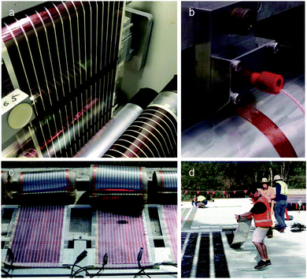
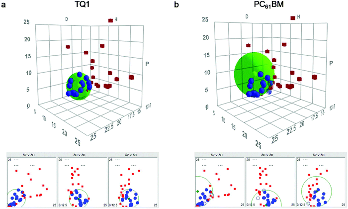
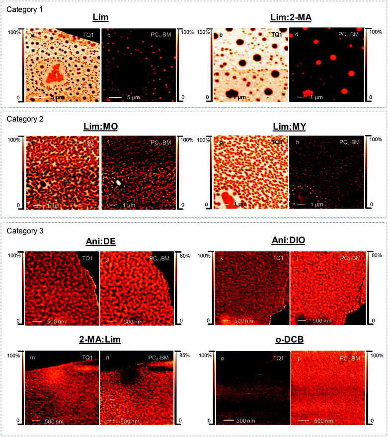
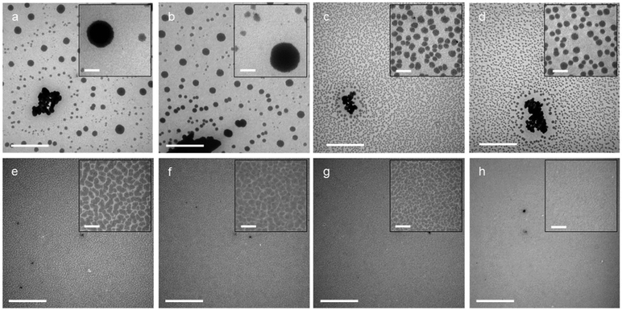
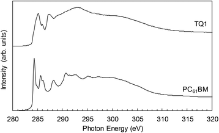
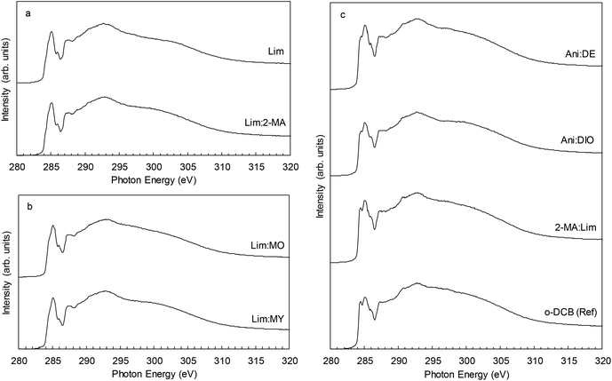
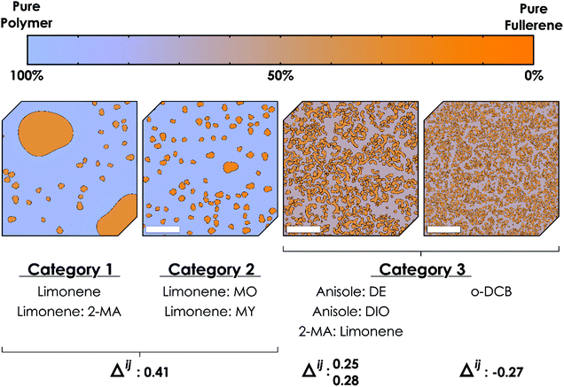

DOI:
10.1039/C9GC02288K
(Paper)
Green Chem., 2019,
21, 5090-5103
Unravelling donor–acceptor film morphology formation for environmentally-friendly OPV ink formulations†
Received
26th June 2019
, Accepted 20th August 2019
First published on 22nd August 2019
The challenge of coating organic photovoltaics (OPV) from green solvents is to achieve the required nanostructured interpenetrating network of donor and acceptor domains based on a rational choice of solvent approach as opposed to the usual trial-and-error methods. We demonstrate here that we can achieve a bicontinuous interpenetrating network with nanoscale phase separation for the chosen donor–acceptor material system poly[2,3-bis-(3-octyloxyphenyl)quinoxaline-5,8-diyl-alt-thiophene-2,5-diyl]:phenyl-C61 butyric acid methyl ester (TQ1:PC61BM) when processing from green solvent ink formulations. This structure is achieved by first calculating the Hansen solubility parameters (HSP) of the donor and acceptor materials, followed by careful choice of solvents with selective relative solubilities for the two materials based on the desired order of precipitation necessary for forming a nanostructured interdigitated network morphology. We found that the relative distances in Hansen space (Ra) between TQ1 and the primary solvent, on the one hand, and PC61BM and the primary solvent, on the other hand, could be correlated to the donor–acceptor morphology for the formulations based on the solvents d-limonene, anisole, and 2-methyl anisole, as well as the halogenated reference solvent o-dichlorobenzene. This nanostructured blend film morphology was characterised with scanning transmission X-ray microscopy (STXM) and transmission electron microscopy (TEM), and the film surface composition was analysed by near edge X-ray absorption fine structure (NEXAFS) spectroscopy. Hansen solubility theory, based on solution thermodynamics, has been used and we propose an HSP-based method that is a general platform for the rational design of ink formulations for solution-based organic electronics, in particular facilitating the green solvent transition of organic photovoltaics. Our results show that the bulk heterojunction morphology for a donor–acceptor system processed from customised solvent mixtures can be predicted by the HSP-based method with good reliability.
1. Introduction
Printed organic electronics is an expanding field with multiple benefits: solution processability of the organic semiconductors; flexibility, light-weight and semi-transparency of the printed devices; and the ability to utilise conventional printing techniques to manufacture devices without the need for expensive infrastructure, making the technology low-cost and globally achievable (Fig. 1).1 High throughput manufacturing involving high coating speeds (>1 m min−1) is critical for an economically feasible industrial scale-up of printed organic electronics, since cost is an important parameter to consider for industrial production.1,2 The commercialisation of polymer solar cell technology will depend on three key factors: device efficiency, lifetime and cost.3 It has been demonstrated that photoactive layers can be routinely slot-die roll-to-roll (R2R) coated at a speed of 1.5 m min−1 and Ag grid electrodes are flexographically R2R printed at 20 m min−1.4
|  |
| | Fig. 1 State-of-the-art roll-to-roll (R2R) printing of polymer solar cell modules using solution processable semiconductors. (a) R2R printing on a flexible poly(ethylene terephthalate) (PET) substrate of width 300 mm, (b) slot-die coating a solution of organic semiconductors with a 13 mm wide meniscus guide (setting the stripe width of 13 mm), (c) fully R2R prepared polymer solar cell modules, (d) rolling out the flexible, light-weight solar cell modules. | |
Transitioning to eco-friendly printing inks for the large-scale manufacture of printed organic electronics is a necessary step, as the use of halogenated solvents is environmentally hazardous, harmful to the health of workers, and will increase the cost of production.5 This transition will require significant effort considering the highest performing organic photovoltaic (OPV) devices are at present processed using halogenated solvents.6–8 Green solvents are environmentally friendly solvents which pose low environmental impact in both production and use, and can include bio-solvents.9 The transition to green solvent processing and green synthetic techniques has been reported in various fields, including catalyst development,10,11 synthesis of inorganic semiconductors for solar cell applications,12 medicinal chemistry,13,14 and analytical chemistry.15 Shifting from halogenated solvents (such as chloroform, chlorobenzene and o-dichlorobenzene) to green solvents requires substantial film microstructure optimisation,16,17 due to the vast effect that the casting solvent has on self-assembly of the complex donor–acceptor film morphology for these systems.18,19 Factors determining donor–acceptor film morphology formation include the vapour pressure of the solvent and additive, relative solubilities of the donor and acceptor molecules,20,21 and miscibility of the donor and acceptor material.22,23
To achieve efficient OPV device performance, it is necessary to control the degree of phase separation between the donor and acceptor components.21,24 The size scale of donor and acceptor domains and the degree of donor–acceptor phase intermixing (phase purity) have a direct impact on the exciton dissociation efficiency (ηED),25 charge carrier mobility, and recombination rates in these systems,26 all of which directly influence the maximum achievable power conversion efficiency (PCE) of solar cells. It is common to utilise small fractions of co-solvents (additives) to avoid the formation of undesired large circular fullerene domains, during solution-processing of OPV, that reduce device performance.21,27,28 Hansen solubility parameters (HSP) have emerged as a practical semi-empirical method of classifying a range of molecule types (polymers, macromolecules, solvents, additives) and predicting the solubility of macromolecules.29–34 HSP has also recently been shown to be a useful tool in identifying molecular phase stabilisers for overcoming microstructure instabilities in high performance PCE11:PC71BM OPV.35
Studies of OPVs fabricated from green solvents have slowly emerged in the past decade,36–38 but considerable research effort is still required to shift from halogenated solvent to green solvent printing and, in particular, through a rational choice rather than the more usual trial-and-error approach of solvent selection. The application of the green solvent system anisole:diphenyl ether to PBQ-4:PC71BM bulk heterojunction (BHJ) OPV achieved an impressive PCE of 8.37% in 2015.17 Zhang et al. then reported PBDT-TS1:PC71BM-based OPV devices processed from green solvent 2-methylanisole, achieving a PCE of 9.67%.39 PCEs exceeding 10% were achieved for donor–acceptor systems PffBT4T-C9C13:PC71BM19 and FTAZ:IT-M40 by coating from non-halogenated solvents 1,2,4-trimethylbenzene:1-phenylnaphthalene and toluene, respectively. Duong et al. explored the possibility of correlating HSP and BHJ film morphology; however, concluded that for their dataset the HSP values alone did not play a critical role in determining the morphology of the organic semiconductor BHJ films.32 Machui et al. determined the HSP of poly(3-hexyl thiophene) (P3HT) and PC61BM and varied the composition of solvent blends in order to effectively demonstrate the processing limits of solvent systems for OPV fabrication.30 An HSP study of the small molecule donor–acceptor system D–π-A tris{4-[5′′-(1,1-dicyanobut-1-en-2-yl)-2,2′-bithiophen-5-yl]phenyl}amine N(Ph-2T-DCN-Et)3 and PC71BM yielded promising green solvent alternatives for the fabrication of OPV devices, with the OPV devices yielding comparable efficiencies to those obtained with halogenated solvents.31 In this study we demonstrate that the relative solubilities of the donor and acceptor material in the primary solvent are of prime importance for the TQ1:PC61BM BHJ film morphology. We utilise STXM and TEM to assess lateral film morphology, as well as NEXAFS to investigate the vertical film composition in spin coated BHJ films for the series of selected green solvent ink formulations. We demonstrate the formation of a finely mixed donor–acceptor blend film morphology that resembles the morphology of films coated from the halogenated solvent o-dichlorobenzene, a solvent that gives the highest PCE for this material system. Our study effectively presents an approach which uses both thermodynamics and kinetics to predict and quantify morphology.
2. Methods
2.1 Materials
TQ1 was synthesised by the copolymerisation of monomers 5,8-dibromo-6,7-difluoro-2,3-bis(3-(octyloxy)phenyl) quinoxaline and 2,5-bis(trimethylstannanyl)thiophene, with the procedure described in detail elsewhere.41,42 The TQ1 had Mn 53![[thin space (1/6-em)]](./rsc_paper1_files/char_2009.gif) 100 Da, Mw 131900 Da and size dispersity (Đ) 2.5, as measured via size exclusion chromatography (SEC) on an Agilent PL-GPC 220 Integrated HT-GPC System with 1,2,4-trichlorobenzene running solvent and polystyrene standards, with further details reported elsewhere.42 PC61BM was synthesised at the Centre for Organic Electronics, University of Newcastle, Australia, following the procedure of Hummelen et al.43 Solvents d-limonene ((R)-(+)-limonene) (Lim), 2-methylanisole (2-MA), anisole (Ani), o-dichlorobenzene (o-DCB), and additives diphenyl ether (DE), 1-methylnaphthalene (MO), 1-methoxynaphthalene (MY) and 1,8-diiodooctane (DIO) were purchased from Sigma Aldrich.
100 Da, Mw 131900 Da and size dispersity (Đ) 2.5, as measured via size exclusion chromatography (SEC) on an Agilent PL-GPC 220 Integrated HT-GPC System with 1,2,4-trichlorobenzene running solvent and polystyrene standards, with further details reported elsewhere.42 PC61BM was synthesised at the Centre for Organic Electronics, University of Newcastle, Australia, following the procedure of Hummelen et al.43 Solvents d-limonene ((R)-(+)-limonene) (Lim), 2-methylanisole (2-MA), anisole (Ani), o-dichlorobenzene (o-DCB), and additives diphenyl ether (DE), 1-methylnaphthalene (MO), 1-methoxynaphthalene (MY) and 1,8-diiodooctane (DIO) were purchased from Sigma Aldrich.
2.2 HSP calculations
HSP calculations for TQ1 and PC61BM were performed using the software package Hansen Solubility Parameters in Practice (HSPiP).44 A set of 36 solvents was used for both TQ1 and PC61BM, listed in ESI (Table S1†). The concentration 1 mg ml−1 was chosen as the solution concentration threshold when determining the solubility of TQ1 and PC61BM, in order to generate input data to the HSP software. Solubility was assigned following 24 h dissolution at 50 °C and ambient pressure. Visual inspection of the solutions led to the assignment in the software of a score of ‘1’ when the solvent dissolved the material and a score of ‘0’ when the solvent did not dissolve the material.
2.3 Ink formulation
The D:A ratio (TQ1:PC61BM, wt/wt) 1:2 was chosen for all green ink formulations, and 1:1 for the o-DCB ink formulation. Materials were dissolved overnight at 50 °C with stirring. The concentration of the solution was 15 mg ml−1 for inks Lim, Lim:2-MA, Lim:MO, Lim:MY; 22.5 mg ml−1 for inks Ani:DE and 2-MA:Lim; 30 mg ml−1 for ink Ani:DIO; and 20 mg ml−1 for ink o-DCB. For inks Lim:2-MA, Lim:MO, Lim:MY and Ani:DIO, 1 v/v% (where there is a 1% volume fraction of the additive in primary solvent) of additive 2-MA, MO, MY and DIO was utilised, respectively. For ink Ani:DE, 3 v/v% of additive DE was utilised. For ink 2-MA:Lim, 5 v/v% of additive Lim was utilised (note in this case, the primary solvent instead became the additive). These chosen solvent formulations are summarised in Table 1 for each ink formulation. These inks were utilised to spin coat BHJ films for STXM, TEM and NEXAFS analysis, with spin coating and film drying conditions provided in ESI (Table S2†). We note that mild thermal drying conditions were chosen carefully in order to avoid exposing the films to conditions that would lead to morphological changes attributed to thermal annealing. The purpose of the thermal drying conditions was solely to accelerate the removal of remaining solvent and additive from the films following spin coating, because if unremoved the remaining solvents and additives can lead to a continually evolving donor–acceptor morphology while the film is in a ‘wet’ semi-solvated state.
Table 1 TQ1:PC61BM ink formulations; seven green ink formulations and one reference ink formulation (halogenated solvent, o-DCB)
| Ink code |
TQ1:PC61BM w/w ratio |
Concentration (mg ml−1) |
Primary solvent |
Additive |
Additive volume fraction (v/v%) |
| Lim |
1:2 |
15 |
Lim |
— |
— |
| Lim:2-MA |
1:2 |
15 |
Lim |
2-MA |
1 |
| Lim:MO |
1:2 |
15 |
Lim |
MO |
1 |
| Lim:MY |
1:2 |
15 |
Lim |
MY |
1 |
| Ani:DE |
1:2 |
22.5 |
Ani |
DE |
3 |
| Ani:DIO |
1:2 |
30 |
Ani |
DIO |
1 |
| 2-MA:Lim |
1:2 |
22.5 |
2-MA |
Lim |
5 |
|
o-DCB (Reference ink) |
1:1 |
20 |
o-DCB |
— |
— |
2.4 NEXAFS spectroscopy
Near-edge X-ray absorption fine-structure (NEXAFS) spectra were collected at the Australian Synchrotron on the SXR beamline in partial electron yield (PEY), total electron yield (TEY) and fluorescence yield (FY) modes.45 All NEXAFS spectra were collected at the C K-edge in the photon energy range 280–320 eV at a 55° incidence angle with respect to the sample surface. For TEY, the sample drain current was measured, PEY was measured with a channeltron detector, and FY was measured with a multichannel plate detector. Sample spectra were normalised to reference spectra collected on an Au mesh sample.46 Energy calibration at the C K-edge was performed by measuring the spectrum of highly ordered pyrolytic graphite (HOPG) and using the position of the exciton resonance at 291.65 eV.47 NEXAFS spectra were analysed using QANT software developed by Gann et al.48 C K-edge NEXAFS spectra collected in TEY mode are presented in Fig. 5 and 6. The mass fractions of TQ1 and PC61BM were determined by fitting the blend film spectra to those of the pristine components, and are listed in Table 5. TEY mode collects signal from the surface 5–10 nm of the film, giving a good representation of sub-surface composition. PEY mode probes the surface 2–3 nm of the film, the area of the film most prone to degradation effects due to air and light exposure,49 and is hence of less relevance to the current study. FY mode probes to a depth of ∼250 nm, a thickness greater that the BHJ film thickness, hence collecting signal from the underlying hole transport layer (HTL) and substrate and thus of less relevance to the current study. The top surface of TQ1:PC61BM BHJ films were measured in order to study the film composition at the BHJ/ETL interface (electron extraction side). For the film top surface measurements, TQ1:PC61BM BHJ films, spin coated from green ink formulations directly onto PEDOT:PSS (Clevios P VP AI 4083, purchased from H.C. Starck) coated highly doped silicon substrates (Type P (boron), <111>, resistance of 1–30 Ω, roughness of 2 nm, purchased from ProSciTech Pty Ltd) were used as samples.
2.5 X-Ray spectromicroscopy
STXM measurements were performed at the Advanced Light Source synchrotron on beamline 5.3.2.2. Samples were prepared for STXM analysis by spin coating blend films of TQ1:PC61BM from the series of green ink formulations onto PEDOT:PSS (Clevios P VP AI 4083, purchased from H.C. Starck) coated glass substrates. 2 × 2 mm2 sections were scored on the films using a scalpel, followed by floating off the film sections onto a D.I. water surface, which was made possible by dissolving the PEDOT:PSS sacrificial layer under the semiconductor material films (for the floating off method refer to He et al.50). 2 × 2 mm2 film sections were subsequently collected onto 300 mesh Cu grids (20 μm bar, 63 μm hole, 3 mm diameter, purchased from ProSciTech Pty Ltd) for STXM measurements. The samples on Cu grids were mounted in the STXM sample chamber and rastered with respect to the X-ray beam, the STXM sample chamber was backfilled with helium (0.33 atm). The STXM Fresnel zone plate had an outer most zone width of 25 nm, setting the spatial resolution limit of the measurement. The transmitted X-ray beam is detected by a scintillator and a photomultiplier tube.51 The energy of the X-ray beam was varied between 270 and 340 eV, spanning the C K-edge region with an energy resolution of 0.1 eV. Energy calibration at the C K-edge was first performed on CO2 gas. Second- and third-order light was removed by an order sorting aperture and also N2 gas filter as detailed in Kilcoyne et al.51 Orthogonal energies were determined from NEXAFS spectra of pristine films of TQ1 (285.2 eV) and PC61BM (284.4 eV). Singular value decomposition was used to fit a sum of the pristine TQ1 and PC61BM NEXAFS spectra to the measured blend spectrum – at each pixel – in the STXM images. Image analysis was performed with the aXis2000 package.52 The average domain sizes presented in Table 4 were calculated in the aXis software by sampling up to 25 domains in the scanned area. Average domain size with standard deviation are presented.
2.6 Electron microscopy
TEM was performed on a JEOL 1200 EXII at an accelerating voltage of 80 kV at varying magnification ranges. BHJ films on 300 mesh Cu grids (20 μm bar, 63 μm hole, 3 mm diameter, purchased from ProSciTech Pty Ltd) were prepared as detailed in section 2.5.
3. Results and discussion
3.1 HSP calculation of organic semiconductors
Hansen solubility parameters are a valuable tool for predicting the solubility of materials such as polymers and organic molecules, and for formulating inks. The organic solute and solvent materials are characterised using three parameters: δD for dispersion (related to van der Waals interaction), δP for polarity (related to dipole moment) and δH for hydrogen bonding. The solubility parameters of TQ1 and PC61BM were determined by the conventional Hansen method, that is, performing solubility tests in a broad range of solvents (spanning the three dimensions of Hansen space), with solvents listed in Table S1 (ESI†).
The HSP sphere for TQ1 is plotted in Fig. 2a and the HSP sphere for PC61BM in Fig. 2b. The blue dots in Fig. 2 represent good solvents for the material, lying within the solubility sphere; the red dots represent non-solvents for the material, lying outside of the solubility sphere (see designation of good solvents and non-solvents in Table S1†). The HSP of each material are the δD, δP, δH coordinates at the centre of the sphere. The HSP for TQ1 and PC61BM are tabulated in Table 2, including the δD, δP, δH coordinates and R0, where R0 is the radius of the solubility sphere in Hansen space. The model assumes that solubilities are spherical in the Hansen space and the calculated sphere is the minimal volume only including “good” solvents. Changing process parameters such as the concentration threshold will change R0 and sometimes even affect the resulting HSP values. Hence, we have kept the process parameters constant when testing the solubility of the two semiconductors (TQ1 and PC61BM), that is, dissolution at 50 °C and ambient pressure, dissolution time of 24 h, solution concentration of 1 mg ml−1. We note that the HSP and R0 values determined for TQ1 and PC61BM in this work are only comparable to other studies if the process parameters are consistently maintained.
|  |
| | Fig. 2 HSP sphere (green) for (a) TQ1 and (b) PC61BM plotted in Hansen space. Blue dots represent good solvents (lying within the calculated sphere) and red dots represent non-solvents (lying outside of the calculated sphere). | |
Table 2 HSP of organic semiconductors TQ1 and PC61BM determined with 36 solvents using a solubility limit of 1 mg ml−1
| Organic semiconductors |
δ
D (MPa½) |
δ
P (MPa½) |
δ
H (MPa½) |
R
0
|
| TQ1 |
17.5 |
4.0 |
3.8 |
4.8 |
| PC61BM |
17.4 |
7.5 |
0.6 |
7.6 |
3.2 Identification of green solvent alternatives
The calculated HSPs of TQ1 and PC61BM enabled a range of non-halogenated solvents to be identified for these organic semiconductors. We chose as primary solvents d-limonene, 2-methyl anisole, anisole, and the additives diphenyl ether, MO and MY as suitable candidates with similar HSP to the organic semiconductors (Table 3). d-Limonene is derived from citrus fruits and is often used in household cleaning products, while anisole is a parent molecule to multiple ethers naturally present in essential oils. 2-Methylanisole is a non-halogenated, biodegradable chemical with low toxicity, and is significantly safer than chlorinated solvents for mass production.39 Further toxicity and biodegradability information, including hazard statements for each solvent and additive, is provided in ESI (Table S3†). These solvents and additives were then combined to form seven ink formulations (detailed in Table 1).
Table 3 Solvent properties for the selected primary solvents and solvent additives (HSP, boiling point and vapour pressure)
| Solvent or additive |
HSP |
Boiling point (°C) |
Vapour pressure (kPa) (at 25 °C) |
|
δ
D (MPa½) |
δ
P (MPa½) |
δ
H (MPa½) |
|
HSP estimated from HSPiP using SMILES.
|
|
Green alternatives
|
| d-Limonene (Lim) |
17.2 |
1.8 |
4.3 |
176 |
0.1–0.2 |
| 2-Methylanisole (2-MA) |
18.3a |
4.7a |
4.8a |
170 |
0.25 |
| Anisole (Ani) |
17.8 |
4.4 |
6.9 |
154 |
0.47 |
| Diphenyl ether (DE) |
19.4 |
3.4 |
4.0 |
259 |
0.003 |
| 1-Methylnaphthalene (MY) |
19.7 |
0.8 |
4.7 |
240 |
0.009 |
| 1-Methoxynaphthalene (MO) |
19.7a |
4.8a |
5.6a |
135 |
0.002 |
|
Halogenated
|
|
o-Dichlorobenzene (o-DCB) |
19.2 |
6.3 |
3.3 |
178 |
0.16–0.18 |
| 1,8-Diiodooctane (DIO) |
18.1a |
3.3a |
3.0a |
167 |
0.00004 |
3.3 Thin film morphology – lateral and vertical
TQ1:PC61BM BHJ thin films were spin coated from each of the eight ink formulations and the lateral film morphology was imaged with STXM (Fig. 3) and TEM (Fig. 4). Whilst TEM can resolve nanostructured domains at high spatial resolution, it is the chemical sensitivity of NEXAFS at the carbon K-edge and STXM that enable the determination of donor-rich and acceptor-rich domain compositions.53
|  |
| | Fig. 3 STXM fractional composition maps showing the concentration of TQ1 and PC61BM for TQ1:PC61BM BHJ films spin coated from ink formulation (a and b) Lim, (c and d) Lim:2-MA, (e and f) Lim:MO, (g and h) Lim:MY, (i and j) Ani:DE, (k and l) Ani:DIO, (m and n) 2-MA:Lim, and (o and p) o-DCB (Reference ink), obtained from imaging at photon energies 285.2 eV and 284.4 eV. Scale bars are 5 μm in a and b, 1 μm in c–h, and 500 nm in i–p. The colour contrast is scaled such that light colours correspond to higher component concentrations. Minima and maxima for the colour scale are black = 0 and white = 100%, with the exception of j and l where white is set to 80%, and n where white is set to 85%, for a clearer visualisation of morphology. | |
|  |
| | Fig. 4 TEM of TQ1:PC61BM BHJ films spin coated from ink formulation (a) Lim, (b) Lim:2-MA, (c) Lim:MO, (d) Lim:MY, (e) Ani:DE, (f) Ani:DIO, (g) 2-MA:Lim, and (h) o-DCB (Reference ink). Scale bars in (a–h) are 5 μm, scale bars in insets are 500 nm. | |
The STXM and TEM analysis show a wide variety in film morphologies. Some of the green solvent ink formulations yielded a fine donor–acceptor film morphology, whilst others show a significant degree of lateral phase separation. The film morphology types observed for the TQ1:PC61BM BHJ film series were divided into three categories, based on the size scale of the film microstructure. Category 1: micron sized fullerene aggregates; Category 2: ∼ 200 nm fullerene aggregates; Category 3: <100 nm TQ1-rich and PC61BM-rich domains forming an interdigitated network. This morphology classification is represented in conceptual schematic form in Fig. 7. The ink formulations Lim and Lim:2-MA fall in Category 1, and the ink formulations Lim:MO and Lim:MY fall in Category 2. The remaining four ink formulations fall in Category 3. All categories will be discussed in further detail here.
|  |
| | Fig. 5 C K-edge NEXAFS spectra measured in total electron yield (TEY) mode of pristine TQ1 and pristine PC61BM films. | |
|  |
| | Fig. 6 C K-edge NEXAFS spectra measured in total electron yield (TEY) mode of TQ1:PC61BM BHJ blend films spin coated from the green solvent ink formulation series. (a) Category 1: Lim and Lim:2-MA; (b) Category 2: Lim:MO and Lim:MY; (c) Category 3: Ani:DE, Ani:DIO, 2-MA:Lim and o-DCB (Reference ink). | |
|  |
| | Fig. 7 Schematic depicting the conceptual model of the formation of donor–acceptor film morphology in green solvent coated BHJ films and complex solvent:additive ink formulations. Scale bars are 600 nm. | |
Macro-scale (>150 nm) PC61BM-rich domains, resembling PC61BM aggregates, are observed in TQ1:PC61BM BHJ films spin coated from ink formulations Lim (Fig. 3a, b and 4a) Lim:2-MA (Fig. 3c, d and 4b), Lim:MO (Fig. 3e, f and 4c) and Lim:MY (Fig. 3g, h and 4d). These macro-scale domains are confirmed to be PC61BM-rich from STXM analysis, and the domain compositions measured from STXM maps are provided in Table 4. In addition, irregularly shaped structures, indicative of residual undissolved polymer, are observed in the STXM maps of TQ1:PC61BM BHJ films spin coated from ink formulations Lim (Fig. 3a and b) and Lim:MY (Fig. 3g and h), and in the TEM images of films prepared from the four ink formulations Lim, Lim:2-MA, Lim:MO and Lim:MY (Fig. 4a–d). For the ink formulation Lim we observe micron-sized fullerene aggregates of average diameter 860 ± 210 nm and secondary fullerene aggregates of diameter 250 ± 80 nm (where ±σ is the standard deviation, representing the variance in domain size) (Table 4). Similarly, for the ink formulation Lim:2-MA we observe micron-sized fullerene aggregates of diameter 870 ± 140 nm and secondary fullerene aggregates of diameter 250 ± 60 nm. For ink formulations Lim:MO and Lim:MY we observe the absence of micron-sized fullerene aggregates, and only the secondary fullerene aggregates, measuring a diameter of 170 ± 30 nm for Lim:MO and 200 ± 60 nm for Lim:MY. For these four ink formulations (Lim, Lim:2-MA, Lim:MO and Lim:MY) we measured a TQ1-rich continuous phase composition of 93–97% by STXM (Table 4), indicating that PC61BM had diffused out of this phase to form the PC61BM aggregates. While the PC61BM aggregates are not measured to be 100% pure, we measured a TQ1-rich capping layer for all films with surface NEXAS measurements (Table 5); hence accounting for the measured compositions from STXM. To provide context for this laterally phase separated film morphology attributed to poor casting solvents, we refer to two recent BHJ studies of polymer donor–fullerene acceptor systems. Zhang et al. showed similar fullerene-rich island (∼500 nm diameter) formation in films of PBDT-TS1:PC71BM spin coated from xylene, a poor solvent in the ink formulation series studied.39 Similarly, Hansson et al. reported 500–800 nm diameter fullerene-rich islands in films of TQ1:PC71BM spin coated from chloroform, a poor solvent for PC71BM.20
Table 4 Morphology classification, domain size and domain composition of TQ1:PC61BM BHJ blend films prepared from the green solvent ink formulation series, as calculated from STXM maps. Average domain composition and average domain size (diameter) are presented, with σ (standard deviation) in parentheses representing the variance in domains. Morphology types are Category 1: micron sized fullerene aggregates; Category 2: ∼200 nm fullerene aggregates; Category 3: interdigitated network of <100 nm TQ1-rich and PC61BM-rich domains
| Ink formulation |
Morphology classification |
TQ1 composition of TQ1-rich phase (%) (σ) |
PC61BM composition of PC61BM-rich phasea (%) (σ) |
PC61BM domain size (diameter) (nm) (σ) |
|
Since STXM is a transmission technique, the actual compositions of the fullerene domains (especially the island domains) cannot be measured when there are polymer-rich wetting and capping layers to the film. Hence the measured compositions listed in Table 4 are lower than the actual domain compositions.
|
| Lim |
Category 1 |
93 (2) |
70 (4) |
860 (210); 250 (80) |
| Lim:2-MA |
Category 1 |
97 (2) |
70 (2) |
870 (140); 250 (60) |
| Lim:MO |
Category 2 |
93 (5) |
81 (12) |
170 (30) |
| Lim:MY |
Category 2 |
96 (1) |
80 (12) |
200 (60) |
| Ani:DE |
Category 3 |
72 (5) |
67 (4) |
100 (20) |
| Ani:DIO |
Category 3 |
66 (7) |
68 (5) |
80 (20) |
| 2-MA:Lim |
Category 3 |
68 (7) |
70 (10) |
60 (20) |
Table 5 Sub-surface (5–10 nm) composition of the TQ1:PC61BM BHJ blend film green solvent ink formulation series, calculated from the linear combination of the C K-edge NEXAFS TEY spectra of pristine components that best fits the NEXAFS TEY spectrum of the blend. Where σ represents the fit uncertainty and comes directly from the least squares fit algorithm of the spectra
| Ink formulation |
TQ1 composition (%) (σ) |
PC61BM composition (%) (σ) |
| Lim |
97 (1) |
3 (1) |
| Lim:2-MA |
94 (1) |
6 (1) |
| Lim:MO |
93 (1) |
7 (1) |
| Lim:MY |
96 (1) |
4 (1) |
| Ani:DE |
79 (1) |
21 (1) |
| Ani:DIO |
79 (1) |
21 (0) |
| 2-MA:Lim |
74 (1) |
26 (1) |
|
o-DCB (Reference ink) |
76 (1) |
24 (1) |
The morphology of the OPV active layer is key to device performance. The domain size should be similar to the exciton diffusion length (∼10 nm in organic semiconductors54) to maximise exciton dissociation, but maintain bicontinuous percolation pathways for efficient charge extraction.55 The reference TQ1:PC61BM BHJ film spin coated from halogenated solvent o-DCB achieves a nanostructured film (Fig. 3o, p and 4h), with domain sizes <25 nm, below the spatial resolution limit of the STXM technique. We have very closely approached this small domain size with three of the green ink formulations, classified as Category 3, Ani:DE, Ani:DIO and 2-MA:Lim (noting that ink formulation Ani:DIO still contains 1 v/v% of halogenated additive DIO and hence is not completely halogen-free). The STXM and TEM analysis of the TQ1:PC61BM BHJ film spin coated from ink formulation Ani:DE shows a finely structured morphology comprising an interdigitated donor–acceptor domain network (Fig. 3i, j and 4e) with an average domain size of 100 ± 20 nm and a donor-rich domain composition of 72 ± 5% TQ1 and acceptor-rich domain composition of 67 ± 4% PC61BM (where ±σ is the standard deviation, representing the variance in domain composition). For the ink formulation Ani:DIO (Fig. 3k, l and 4f) we observe a further reduction in domain size to 80 ± 20 nm, and measured via STXM a donor-rich domain composition of 66 ± 7% TQ1 and acceptor-rich domain composition of 68 ± 5% PC61BM. We then achieve the finest morphology within the green ink formulation series for the 2-MA:Lim BHJ film (Fig. 3m, n and 4g), with a feature size of 60 ± 20 nm, and measured donor-rich domain composition of 68 ± 7% TQ1 and acceptor-rich domain composition of 70 ± 10% PC61BM.
Large domains are detrimental for organic solar cell performance. For Category 1 and Category 2 morphologies, the donor and acceptor domains are too large, and OPV devices would suffer from a low exciton dissociation efficiency. Category 1 and Category 2 morphologies are absent of an interconnected fullerene network required for efficient electron charge extraction due to the fullerene aggregate formation which manifests as circular island domains within the film. While the TQ1-rich domains are interconnected for all three categories of morphology, it is essential to have bicontinuous percolation pathways to enable both efficient hole extraction through the donor material and efficient electron extraction through the acceptor material. For Category 1 and Category 2 morphologies, the PC61BM content of the TQ1-rich phase is less than 20%, which is below the percolation threshold for effective charge transport of electrons (the minimum fraction of PC61BM required to form continuous PC61BM percolation pathways in a blend film).56,57 We have effectively achieved these bicontinuous pathways with the Category 3 ink formulations, where an interdigitated network exists with domain size approaching the exciton diffusion length in these systems. Importantly, this thin film structure has been achieved with green solvents for the TQ1:PC61BM material system.
Surface C K-edge NEXAFS spectra collected in TEY mode are presented in Fig. 5 for pristine films of TQ1 and PC61BM, and Fig. 6 for the eight TQ1:PC61BM BHJ films. All BHJ films possessed a TQ1-enriched surface, with 2-MA:Lim and o-DCB films containing the highest degree of blending, with a measured TQ1 composition of 74 ± 1% and 76 ± 1%, respectively (Table 5). Enrichment of the donor material at the blend film surface will limit electron extraction in an OPV device of conventional architecture and facilitate electron extraction in an inverted architecture OPV device. The surface energy of the TQ1 and PC61BM drives the vertical structure formation observed in the blend films. TQ1, with a lower surface energy (29 mJ m−2)20 than PC61BM (38 mJ m−2),58 is driven to the film surface upon solvent evaporation, to minimise total energy.
3.4 Correlation of HSP to morphology
There is a rich complexity to phase evolution during solvent evaporation.59,60 To develop tools to predict this phase evolution, and in turn control morphology formation, is the ultimate goal for organic photovoltaic active layers.61 We here calculated the distance in HSP space (Ra) between both the donor and acceptor material to the primary solvent in order to determine a correlation between HSP and donor–acceptor film morphology. The calculation of Ra uses the HSP for component 1 (δD1, δP1, δH1) and component 2 (δD2, δP2, δH2) in eqn (1).| |
| Ra2 = 4 (δD2 − δD1)2 + (δP2 − δP1)2 + (δH2 − δH1)2 | (1) |
The calculated values of Ra are listed in Table 6 for the materials TQ1 (Rai) and PC61BM (Raj) to the four primary solvents Lim, Ani, 2-MA and o-DCB. A difference parameter (Δij) can then be established which factors in the relative distance of a given solvent to the two solubility sphere centres (eqn (2)), using the solubility sphere radius for TQ1 (R0i) and PC61BM (R0j).
Table 6 Distances in HSP space (Rai and Raj) between semiconductors and primary solvents, Rai and Raj normalised to sphere radius for TQ1 (R0i) and PC61BM (R0j), and the calculated difference parameter in HSP space (Δij)
| Primary solvent |
TQ1 |
PC61BM |
Δij |
|
R
a
i
|
R
a
i
/R0i |
R
a
j
|
R
a
j
/R0j |
| Lim |
2.3 |
0.48 |
6.8 |
0.89 |
0.41 |
| Ani |
3.2 |
0.67 |
7.0 |
0.92 |
0.25 |
| 2-MA |
2.0 |
0.42 |
5.3 |
0.70 |
0.28 |
|
o-DCB (Ref) |
4.2 |
0.88 |
4.6 |
0.61 |
−0.27 |
If Δ > 0 then i is more soluble than j; if Δ < 0 then j is more soluble than i. The closer Rai is to R0i, the system tends to insolubility. Hence, the solvent that is closer to the origin of the HSP sphere when comparing a binary material system is a superior solvent for that given material, under the parameters set in the HSP analysis. Calculated Δij values are presented in Table 6 for the four primary solvents studied. Now, there is a correlation observed between Δij and the degree of phase separation in the TQ1:PC61BM films, as quantified by the average domain size. As Δij increases (that is, PC61BM becomes increasingly less soluble compared to TQ1) then the phase segregation (average domain size) increases. When utilising the principle of differential solubilities, the goal is to avoid the fullerene acceptor precipitating first (positive Δ), and forming large (>150 nm) aggregates in the film. We hypothesise that it is preferable for the donor polymer to precipitate first during film casting forming a web-type structure; if the fullerene acceptor is more soluble it will remain dissolved for longer and precipitate second (negative Δ), filling the interstices in the film. This order is effectively what we achieve as Δij decreases and we move through the solvent series: Lim → Ani → 2-MA → o-DCB.
However, HSP theory only considers equilibrium thermodynamics, not kinetics. The time that the system takes to come out of solution is governed by the vapour pressure of the solvent – this is the role of the additives. Considering the d-limonene series, we observe an increase in phase segregation when moving from Lim:MO → Lim:MY → Lim → Lim:2-MA and this trend correlates with an increase is vapour pressure of the system 0.002 → 0.009 → 0.15 → 0.25 kPa. When considering the anisole series, we observe an increase in phase segregation when moving from Ani:DIO → Ani:DE and this trend correlates to an increase in vapour pressure of the system (and hence decrease in drying time) from 0.00004 → 0.003 kPa. Note the vapour pressure will decrease significantly when the system reaches low amounts of remaining solvents due to the interaction between solvent and solutes. The physical parameters used here reflect bulk properties only; differences will exist between bulk properties and thin film properties.
Controlling morphology formation in these donor–acceptor systems involves managing the crystallisation kinetics and molecular diffusion kinetics. The thermodynamically stable state for a TQ1:PC61BM blend film is phase segregated, hence to avoid this structure formation the kinetics must be controlled, or limited. As we have observed in this study, green solvents typically have high boiling points and low vapour pressures, which means that upon spin coating or printing the solvent evaporation rate is low and donor and acceptor materials have more available time to migrate and reorganise into a thermodynamically favourable state. A similar principle to solvent annealing, which is often used to “slow down” the drying speed of the deposited wet donor–acceptor film.62 Unfortunately, the thermodynamically favourable state of the donor–acceptor BHJ film is often not the optimal microstructure for an efficient OPV, since alike molecules are attracted to each other this means the film morphology tends towards a state comprised of large phase segregated domains. We have effectively shown in this study that HSP enables the prediction of film morphology formation in thin films of donor–acceptor systems, as the relative solubilities of the two materials can be gauged prior to experimental studies, and a nanostructured interdigitated network morphology can be achieved.
3.5 Outlook for the application of HSP to OPV printing
In this study we have successfully applied the HSP-based method to a well-known polymer donor – fullerene acceptor system. Recently the field of OPV has been moving to non-fullerene acceptors (NFA),63 due to their advantageous properties of tuneable HOMO and LUMO levels leading to higher VOC devices, broad and strong light absorption providing for high photocurrents, and superior morphological stability in thin film devices.8,64,65 We have effectively demonstrated a strategy for the application of the HSP-based method to the screening of OPV green solvent ink formulations, which has established a clear pathway forward which can now be utilised for screening green solvents for the large suite of NFA systems available for cutting-edge OPV research and module printing. Indeed this process has already begun with reports from Xu et al. for the PBDTS-TDZ:ITIC system66 and Ye et al. for the FTAZ:IT-M system.40
4. Conclusions
Hansen solubility parameters have the potential to predict solubility in ternary (two solutes, one solvent) and quaternary (two solutes, two solvents) blends. A series of TQ1:PC61BM BHJ films were spin coated from green solvent ink formulations and X-ray spectromicroscopy was utilised to measure donor–acceptor domain size and domain composition. We have shown that we can now engineer a nanostructured donor–acceptor thin film from green solvents, with donor and acceptor domain sizes closely matched to exciton diffusion length in organic semiconductor systems. The HSP approach is versatile for different organic semiconducting material systems, and we have detailed the pathway for using the HSP semi-empirical tool to predict morphologies, screen suitable ink formulations, and most importantly design nanostructured donor–acceptor thin film morphologies for efficient OPV device production. We demonstrate that by carefully considering HSP and choosing solvent blends with relative solubilities for the two materials, donor and acceptor can be driven to precipitate in the desired order necessary for forming a nanostructured interdigitated network morphology.
Abbreviations
| Ani | Anisole |
| DE | Diphenyl ether |
| DIO | 1,8-Diiodooctane |
| ETL | Electron transport layer |
| Lim | d-Limonene |
| 2-MA | 2-Methylanisole |
| MO | 1-Methylnaphthalene |
| MY | 1-Methoxynaphthalene |
|
o-DCB |
o-Dichlorobenzene |
| HSP | Hansen solubility parameters |
| HTL | Hole transport layer |
| PC61BM | Phenyl-C61 butyric acid methyl ester |
| PET | poly(ethylene terephthalate) |
| R2R | Roll-to-roll |
| SMILES | Simplified molecular-input line-entry system |
| TQ1 | Poly[2,3-bis-(3-octyloxyphenyl)quinoxaline-5,8-diyl-alt-thiophene-2,5-diyl]. |
Conflicts of interest
There are no conflicts of interest to declare.
Acknowledgements
We acknowledge the support from the Faculty of Health, Science and Engineering of Karlstad University for the mobility grant for N. P. H. as an incoming visiting researcher. This research used resources of the Advanced Light Source, which is a DOE Office of Science User Facility under contract no. DE-AC02-05CH11231. The authors thank support staff at the Advanced Light Source synchrotron. We acknowledge travel funding provided by the International Synchrotron Access Program (ISAP) managed by the Australian Synchrotron, part of ANSTO, and funded by the Australian Government. We acknowledge financial support from the Commonwealth of Australia through the Access to Major Research Facilities Program. J. v. S. and E. M. acknowledge the funding from the Knut and Alice Wallenberg foundation under contract 2016.0059. E. M. acknowledges the support of the Swedish Energy Council, contract number 38327-1, and the Swedish Research Council, grant 2015-03778. J. v. S. acknowledges the funding from the Swedish National Space Agency under contract 185/17. This work was performed in part at the Materials node (Newcastle) of the Australian National Fabrication Facility (ANFF), which is a company established under the National Collaborative Research Infrastructure Strategy to provide nano- and microfabrication facilities for Australia's researchers. Thank you to the University of Newcastle Electron Microscopy and X-ray Unit. The authors thank Dr S. D. Eder for her contribution to the STXM study. Thank you to undergraduate students A. Heim, A. Dunstan, J. Bull, M. Hamilton, D. Lee and S. Bentsen for preliminary experiments in testing ink formulations.
References
- X. Gu, L. Shaw, K. Gu, M. F. Toney and Z. Bao, The meniscus-guided deposition of semiconducting polymers, Nat. Commun., 2018, 9, 534 CrossRef PubMed
 .
.
- F. Machui, M. Hösel, N. Li, G. D. Spyropoulos, T. Ameri, R. R. Søndergaard, M. Jørgensen, A. Scheel, D. Gaiser, K. Kreul, D. Lenssen, M. Legros, N. Lemaitre, M. Vilkman, M. Välimäki, S. Nordman, C. J. Brabec and F. C. Krebs, Cost analysis of roll-to-roll fabricated ITO free single and tandem organic solar modules based on data from manufacture, Energy Environ. Sci., 2014, 7, 2792–2802 RSC .
- N. A. Cooling, E. F. Barnes, F. Almyahi, K. Feron, M. F. Al-Mudhaffer, A. Al-Ahmad, B. Vaughan, T. R. Andersen, M. J. Griffith, A. S. Hart, A. G. Lyons, W. J. Belcher and P. C. Dastoor, A low-cost mixed fullerene acceptor blend for printed electronics, J. Mater. Chem. A, 2016, 4, 10274–10281 RSC .
- T. R. Andersen, N. A. Cooling, F. Almyahi, A. S. Hart, N. C. Nicolaidis, K. Feron, M. Noori, B. Vaughan, M. J. Griffith, W. J. Belcher and P. C. Dastoor, Fully roll-to-roll prepared organic solar cells in normal geometry with a sputter-coated aluminium top-electrode, Sol. Energy Mater. Sol. Cells, 2016, 149, 103–109 CrossRef CAS .
- C. Duan, W. Cai, B. B. Y. Hsu, C. Zhong, K. Zhang, C. Liu, Z. Hu, F. Huang, G. C. Bazan, A. J. Heeger and Y. Cao, Toward green solvent processable photovoltaic materials for polymer solar cells: the role of highly polar pendant groups in charge carrier transport and photovoltaic behavior, Energy Environ. Sci., 2013, 6, 3022–3034 RSC .
- S. Zhang, Y. Qin, J. Zhu and J. Hou, Over 14% efficiency in polymer solar cells enabled by a chlorinated polymer donor, Adv. Mater., 2018, 30, 1800868 CrossRef PubMed .
- S. Zhang, L. Ye, H. Zhang and J. Hou, Green-solvent-processable organic solar cells, Mater. Today, 2016, 19, 533–543 CrossRef CAS .
- J. Yuan, Y. Zhang, L. Zhou, G. Zhang, H. L. Yip, T. K. Lau, X. Lu, C. Zhu, H. Peng, P. A. Johnson, M. Leclerc, Y. Cao, J. Ulanski, Y. Li and Y. Zou, Single-junction organic solar cell with over 15% efficiency using fused-ring acceptor with electron-deficient core, Joule, 2019, 3, 1140–1151 CrossRef CAS .
- C. Capello, U. Fischer and K. Hungerbühler, What is a green solvent? A comprehensive framework for the environmental assessment of solvents, Green Chem., 2007, 9, 927–934 RSC .
- N. Kaur, G. Kaur, A. Bhalla, J. S. Dhau and G. R. Chaudhary, Metallosurfactant based Pd-Ni alloy nanoparticles as a proficient catalyst in the Mizoroki Heck coupling reaction, Green Chem., 2018, 20, 1506–1514 RSC .
- N. Kaur, S. Kaur, G. Kaur, A. Bhalla, S. Srinivasan and G. R. Chaudhary, Metallovesicles as smart nanoreactors for green catalytic synthesis of benzimidazole derivatives in water, J. Mater. Chem. A, 2019, 7, 17306–17314 RSC .
- J. Zhao, I. Jeon, Q. Yi, M. Jain, M. H. Rummeli, P. Song, Y. Matsuo and G. Zou, An efficient organic solvent-free solution-processing strategy for high-mobility metal chalcogenide film growth, Green Chem., 2017, 19, 946–951 RSC .
- R. K. Henderson, C. Jiménez-González, D. J. C. Constable, S. R. Alston, G. G. A. Inglis, G. Fisher, J. Sherwood, S. P. Binks and A. D. Curzons, Expanding GSK's solvent selection guide - Embedding sustainability into solvent selection starting at medicinal chemistry, Green Chem., 2011, 13, 854–862 RSC .
- D. Prat, A. Wells, J. Hayler, H. Sneddon, C. R. McElroy, S. Abou-Shehada and P. J. Dunn, CHEM21 selection guide of classical- and less classical-solvents, Green Chem., 2015, 18, 288–296 RSC .
- S. Armenta, S. Garrigues and M. de la Guardia, Green analytical chemistry, Trends Anal. Chem., 2008, 27, 497–511 CrossRef CAS .
- L. Tan, P. Li, Q. Zhang, R. Izquierdo, M. Chaker and D. Ma, Towards enhancing solar cell performance: An effective and ‘green’ additive, ACS Appl. Mater. Interfaces, 2018, 10, 6498–6504 CrossRef CAS .
- D. Liu, Z. Wang, S. Zhang, Z. Zheng, B. Yang, W. Ma and J. Hou, Rational selection of solvents and fine tuning of morphologies toward highly efficient polymer solar cells fabricated using green solvents, RSC Adv., 2015, 5, 69567–69572 RSC .
- C. McDowell and G. C. Bazan, Organic solar cells processed from green solvents, Curr. Opin. Green Sustainable Chem., 2017, 5, 49–54 CrossRef .
- J. Zhao, Y. Li, G. Yang, K. Jiang, H. Lin, H. Ade, W. Ma and H. Yan, Efficient organic solar cells processed from hydrocarbon solvents, Nat. Energy, 2016, 1, 15027 CrossRef CAS .
- R. Hansson, L. K. E. Ericsson, N. P. Holmes, J. Rysz, A. Opitz, M. Campoy-Quiles, E. Wang, M. G. Barr, A. L. D. Kilcoyne, X. Zhou, P. Dastoor and E. Moons, Vertical and lateral morphology effects on solar cell performance for a thiophene–quinoxaline copolymer:PC70BM blend, J. Mater. Chem. A, 2015, 3, 6970–6979 RSC .
- J. J. van Franeker, M. Turbiez, W. Li, M. M. Wienk and R. A. J. Janssen, A real-time study of the benefits of co-solvents in polymer solar cell processing, Nat. Commun., 2015, 6, 6229 CrossRef CAS PubMed .
- L. Ye, B. A. Collins, X. Jiao, J. Zhao, H. Yan and H. Ade, Miscibility-function relations in organic solar cells: Significance of optimal miscibility in relation to percolation, Adv. Energy Mater., 2018, 8, 1703058 CrossRef .
- Z. Peng, X. Jiao, L. Ye, S. Li, J. J. Rech, W. You, J. Hou and H. Ade, Measuring temperature-dependent miscibility for polymer solar cell blends: An easily accessible optical method reveals complex behavior, Chem. Mater., 2018, 30, 3943–3951 CrossRef CAS .
- S. Kouijzer, J. J. Michels, M. Van Den Berg, V. S. Gevaerts, M. Turbiez, M. M. Wienk and R. A. J. Janssen, Predicting morphologies of solution processed polymer:fullerene blends, J. Am. Chem. Soc., 2013, 135, 12057–12067 CrossRef CAS PubMed .
- N. P. Holmes, M. Marks, J. M. Cave, K. Feron, M. G. Barr, A. Fahy, A. Sharma, X. Pan, D. A. L. Kilcoyne, X. Zhou, D. A. Lewis, M. R. Andersson, J. van Stam, A. B. Walker, E. Moons, W. J. Belcher and P. C. Dastoor, Engineering two-phase and three-phase microstructures from water-based dispersions of nanoparticles for eco-friendly polymer solar cell applications, Chem. Mater., 2018, 30, 6521–6531 CrossRef CAS .
- Y. Wang, H. Zhu, Z. Shi, F. Wang, B. Zhang, S. Dai and Z. Tan, Engineering the vertical concentration distribution within the polymer:fullerene blends for high performance inverted polymer solar cells, J. Mater. Chem. A, 2017, 5, 2319–2327 RSC .
- H. Liao, C. Ho, C. Chang, M. Jao, S. B. Darling and W. Su, Additives for morphology control in high-efficiency organic solar cells, Mater. Today, 2013, 16, 326–336 CrossRef CAS .
- Q. Wan, X. Guo, Z. Wang, W. Li, B. Guo, W. Ma, M. Zhang and Y. Li, 10.8% efficiency polymer solar cells based on PTB7-Th and PC71BM via binary solvent additives treatment, Adv. Funct. Mater., 2016, 26, 6635–6640 CrossRef CAS .
- B. Walker, A. Tamayo, D. T. Duong, X.-D. Dang, C. Kim, J. Granstrom and T.-Q. Nguyen, A systematic approach to solvent selection based on cohesive energy densities in a molecular bulk heterojunction system, Adv. Energy Mater., 2011, 1, 221–229 CrossRef CAS .
- F. Machui, S. Langner, X. Zhu, S. Abbott and C. J. Brabec, Determination of the P3HT:PCBM solubility parameters via a binary solvent gradient method: Impact of solubility on the photovoltaic performance, Sol. Energy Mater. Sol. Cells, 2012, 100, 138–146 CrossRef CAS .
- I. Burgués-Ceballos, F. Machui, J. Min, T. Ameri, M. M. Voigt, Y. N. Luponosov, S. A. Ponomarenko, P. D. Lacharmoise, M. Campoy-Quiles and C. J. Brabec, Solubility based identification of green solvents for small molecule organic solar cells, Adv. Funct. Mater., 2014, 24, 1449–1457 CrossRef .
- D. T. Duong, B. Walker, J. Lin, C. Kim, J. Love, B. Purushothaman, J. E. Anthony and T. Q. Nguyen, Molecular solubility and Hansen solubility parameters for the analysis of phase separation in bulk heterojunctions, J. Polym. Sci., Part B: Polym. Phys., 2012, 50, 1405–1413 CrossRef CAS .
-
F. Machui and C. J. Brabec, in Semiconducting Polymer Composites: Principles, Morphologies, Properties and Applications, ed. X. Yang, Wiley-VCH Verlag GmbH & Co. KGaA, First., 2012 Search PubMed .
- F. Machui, S. Abbott, D. Waller, M. Koppe and C. J. Brabec, Determination of solubility parameters for organic semiconductor formulations, Macromol. Chem. Phys., 2011, 212, 2159–2165 CrossRef CAS .
- C. Zhang, T. Heumueller, S. Leon, W. Gruber, K. Burlafinger, X. Tang, J. D. Perea, I. Wabra, A. Hirsch, T. Unruh, N. Li and C. J. Brabec, A top-down strategy identifying molecular phase stabilizers to overcome microstructure instabilities in organic solar cells, Energy Environ. Sci., 2019, 12, 1078–1087 RSC .
- B. Schmidt-Hansberg, M. Sanyal, N. Grossiord, Y. Galagan, M. Baunach, M. F. G. Klein, A. Colsmann, P. Scharfer, U. Lemmer, H. Dosch, J. Michels, E. Barrena and W. Schabel, Investigation of non-halogenated solvent mixtures for high throughput fabrication of polymer-fullerene solar cells, Sol. Energy Mater. Sol. Cells, 2012, 96, 195–201 CrossRef CAS .
- C.-D. Park, T. A. Fleetham, J. Li and B. D. Vogt, High performance bulk-heterojunction organic solar cells fabricated with non-halogenated solvent processing, Org. Electron., 2011, 12, 1465–1470 CrossRef CAS .
- C. Sprau, M. Wagner, D. Landerer, M. Koppitz, A. Schulz, D. Bahro, A. Colsmann, F. Buss, W. Schabel and P. Scharfer, Highly efficient polymer solar cells cast from non-halogenated xylene/anisaldehyde solution, Energy Environ. Sci., 2015, 8, 2744–2752 RSC .
- H. Zhang, H. Yao, W. Zhao, L. Ye and J. Hou, High-efficiency polymer solar cells enabled by environment-friendly single-solvent processing, Adv. Energy Mater., 2016, 6, 1502177 CrossRef .
- L. Ye, Y. Xiong, Q. Zhang, S. Li, C. Wang, Z. Jiang, J. Hou, W. You and H. Ade, Surpassing 10% efficiency benchmark for nonfullerene organic solar cells by scalable coating in air from single nonhalogenated solvent, Adv. Mater., 2018, 30, 1705485 CrossRef .
- E. Wang, L. Hou, Z. Wang, S. Hellström, F. Zhang, O. Inganäs and M. R. Andersson, An easily synthesized blue polymer for high-performance polymer solar cells, Adv. Mater., 2010, 22, 5240–5244 CrossRef CAS .
- N. P. Holmes, M. Marks, P. Kumar, R. Kroon, M. G. Barr, N. Nicolaidis, K. Feron, A. Pivrikas, A. Fahy, A. Diaz De Zerio Mendaza, A. L. D. Kilcoyne, C. Müller, X. Zhou, M. R. Andersson, P. C. Dastoor and W. J. Belcher, Nano-pathways: Bridging the divide between water-processable nanoparticulate and bulk heterojunction organic photovoltaics, Nano Energy, 2016, 19, 495–510 CrossRef CAS .
- J. C. Hummelen, B. W. Knight, F. Lepeq, F. Wudl, J. Yao and C. L. Wilkins, Preparation and characterization of fulleroid and methanofullerene derivatives, J. Org. Chem., 1995, 60, 532–538 CrossRef CAS .
-
S. Abbott, C. Hansen and H. Yamamoto, Hansen Solubility Parameters in Practice, https://www.hansen-solubility.com/contact.php (accessed 12 September 2015).
- B. C. C. Cowie, A. Tadich and L. Thomsen, The current performance of the wide range (90–2500 eV) soft X-ray beamline at the Australian synchrotron, AIP Conf. Proc., 2010, 1234, 307–310 CrossRef .
- B. Watts, L. Thomsen and P. C. Dastoor, Methods in carbon K-edge NEXAFS: Experiment and analysis, J. Electron Spectrosc. Relat. Phenom., 2006, 151, 105–120 CrossRef CAS .
- B. Watts and H. Ade, A simple method for determining linear polarization and energy calibration of focused soft X-ray beams, J. Electron Spectrosc. Relat. Phenom., 2008, 162, 49–55 CrossRef CAS .
- E. Gann, C. R. McNeill, A. Tadich, B. C. C. Cowie and L. Thomsen, Quick AS NEXAFS Tool (QANT): A program for NEXAFS loading and analysis developed at the Australian Synchrotron, J. Synchrotron Radiat., 2016, 23, 374–380 CrossRef CAS .
- R. Hansson, L. K. E. Ericsson, N. P. Holmes, V. Blazinic, P. Dastoor and E. Moons, Opportunities and challenges in probing local composition of organic material blends for photovoltaics, J. Mater. Res., 2017, 32, 1982–1992 CrossRef CAS .
- X. He, B. A. Collins, B. Watts, H. Ade and C. R. McNeill, Studying polymer/fullerene intermixing and miscibility in laterally patterned films with X-ray spectromicroscopy, Small, 2012, 8, 1920–1927 CrossRef CAS .
- A. L. D. Kilcoyne, T. Tyliszczak, W. F. Steele, S. Fakra, P. Hitchcock, K. Franck, E. Anderson, B. Harteneck, E. G. Rightor, G. E. Mitchell, A. P. Hitchcock, L. Yang, T. Warwick and H. Ade, Interferometer-controlled scanning transmission X-ray microscopes at the Advanced Light Source, J. Synchrotron Radiat., 2003, 10, 125–136 CrossRef CAS PubMed .
-
A. P. Hitchcock, aXis 2000 – Analysis of X-ray Images and Spectra, http://unicorn.mcmaster.ca/aXis2000.html (accessed 1 April 2011).
- H. Ade, X. Zhang, S. Cameron, C. Costello, J. Kirz and S. Williams, Chemical contrast in X-ray microscopy and spatially resolved XANES spectroscopy of organic specimens, Science, 1992, 258, 972–975 CrossRef CAS PubMed .
- S. Chandrabose, K. Chen, A. J. Barker, J. J. Sutton, S. K. K. Prasad, J. Zhu, J. Zhou, K. C. Gordon, Z. Xie, X. Zhan and J. M. Hodgkiss, High exciton diffusion coefficients in fused ring electron acceptor films, J. Am. Chem. Soc., 2019, 141, 6922–6929 CrossRef CAS .
- B. A. Collins, Z. Li, J. R. Tumbleston, E. Gann, C. R. McNeill and H. Ade, Absolute measurement of domain composition and nanoscale size distribution explains performance in PTB7:PC71BM solar cells, Adv. Energy Mater., 2013, 3, 65–74 CrossRef CAS .
- K. Vakhshouri, D. R. Kozub, C. Wang, A. Salleo and E. D. Gomez, Effect of miscibility and percolation on electron transport in amorphous poly(3-hexylthiophene)/phenyl-C61-butyric acid methyl ester blends, Phys. Rev. Lett., 2012, 108, 26601 CrossRef PubMed .
- J. A. Bartelt, Z. M. Beiley, E. T. Hoke, W. R. Mateker, J. D. Douglas, B. a. Collins, J. R. Tumbleston, K. R. Graham, A. Amassian, H. Ade, J. M. J. Fréchet, M. F. Toney and M. D. McGehee, The importance of fullerene percolation in the mixed regions of polymer-fullerene bulk heterojunction solar cells, Adv. Energy Mater., 2013, 3, 364–374 CrossRef CAS .
- C. M. Björström Svanström, J. Rysz, A. Bernasik, A. Budkowski, F. Zhang, O. Inganäs, M. R. Andersson, K. O. Magnusson, J. J. Benson-Smith, J. Nelson and E. Moons, Device performance of APFO-3/PCBM solar cells with controlled morphology, Adv. Mater., 2009, 21, 4398–4403 CrossRef .
- Q. Liang, J. Han, C. Song, X. Yu, D. M. Smilgies, K. Zhao, J. Liu and Y. Han, Reducing the confinement of PBDB-T to ITIC to improve the crystallinity of PBDB-T/ITIC blends, J. Mater. Chem. A, 2018, 6, 15610–15620 RSC .
- E. N. M. Cirillo, M. Colangeli, E. Moons, A. Muntean, S.-A. Muntean and J. van Stam, A lattice model approach to the morphology formation from ternary mixtures during the evaporation of one component, Eur. Phys. J.: Spec. Top., 2019, 228, 55–68 CAS .
- Y. Liu, J. Zhao, Z. Li, C. Mu, W. Ma, H. Hu, K. Jiang, H. Lin, H. Ade and H. Yan, Aggregation and morphology control enables multiple cases of high-efficiency polymer solar cells, Nat. Commun., 2014, 5, 5293 CrossRef CAS .
- Z. Li, X. Xu, W. Zhang, X. Meng, W. Ma, A. Yartsev, O. Inganäs, M. R. Andersson, R. A. J. Janssen and E. Wang, High performance all-polymer solar cells by synergistic effects of fine-tuned crystallinity and solvent annealing, J. Am. Chem. Soc., 2016, 138, 10935–10944 CrossRef CAS .
- J. Zhang, H. S. Tan, X. Guo, A. Facchetti and H. Yan, Material insights and challenges for non-fullerene organic solar cells based on small molecular acceptors, Nat. Energy, 2018, 3, 720–731 CrossRef CAS .
- S. Zhang, Y. Qin, J. Zhu and J. Hou, Over 14% efficiency in polymer solar cells enabled by a chlorinated polymer donor, Adv. Mater., 2018, 30, 1800868 CrossRef .
- D. Baran, N. Gasparini, A. Wadsworth, C. H. Tan, N. Wehbe, X. Song, Z. Hamid, W. Zhang, M. Neophytou, T. Kirchartz, C. J. Brabec, J. R. Durrant and I. McCulloch, Robust nonfullerene solar cells approaching unity external quantum efficiency enabled by suppression of geminate recombination, Nat. Commun., 2018, 9, 2059 CrossRef PubMed .
- X. Xu, T. Yu, Z. Bi, W. Ma, Y. Li and Q. Peng, Realizing over 13% efficiency in green-solvent-processed nonfullerene organic solar cells enabled by 1,3,4-thiadiazole-based wide-bandgap copolymers, Adv. Mater., 2018, 30, 1703973 CrossRef PubMed .
Footnote |
| † Electronic supplementary information (ESI) available. See DOI: 10.1039/c9gc02288k |
|
| This journal is © The Royal Society of Chemistry 2019 |

 Open Access Article
Open Access Article This Open Access Article is licensed under a
This Open Access Article is licensed under a  *ab,
Holly
Munday
b,
Matthew G.
Barr
*ab,
Holly
Munday
b,
Matthew G.
Barr
{kind=link}
{kind=link}
{kind=link}
{kind=link}
{kind=link}
{kind=link}
{kind=link}
{kind=link}